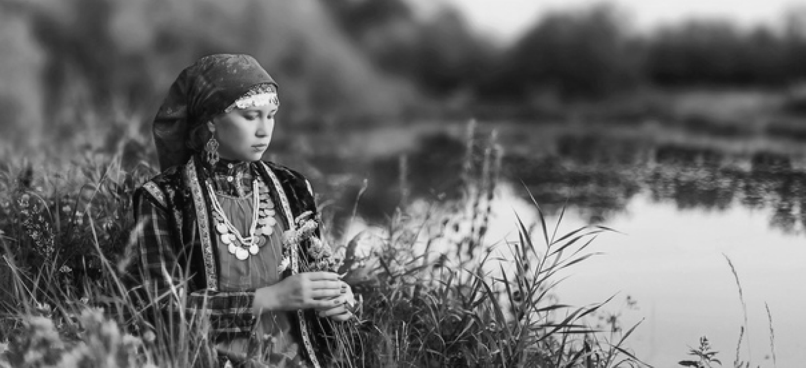

УДМУРТСКОЕ ТКАЧЕСТВО
Удмуртское ткачество – это искусство создания удивительно красивых и уникальных текстильных изделий, которые отражают богатое культурное наследие удмуртского народа. Этот вид ремесла характеризуется тщательной проработкой узоров, использованием традиционных техник и мастерством передачи мотивов и символов, унаследованных от поколений. Удмуртское ткачество не только является выразительным искусством, но и обладает глубоким историческим и культурным значением, сохраняя свою уникальность и узнаваемый стиль.
